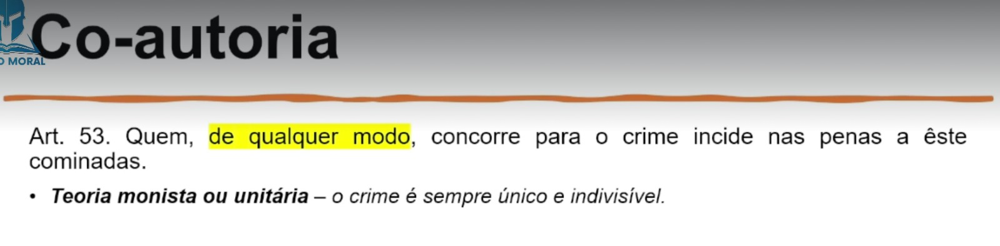
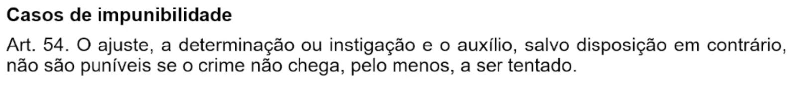
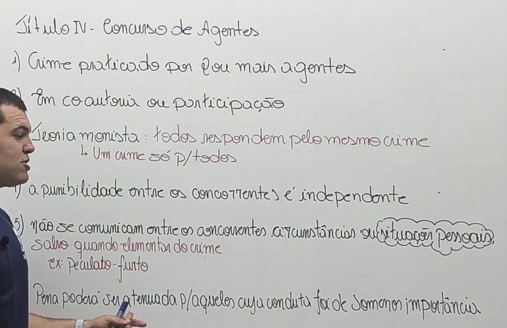

⚖ TÍTULO I - DA APLICAÇÃO DA LEI PENAL MILITAR (Art. 1º ao 28)
⚖ TÍTULO II - DO CRIME (Art. 29 ao 47)
⚖ TÍTULO III - DA IMPUTABILIDADE PENAL (Art. 48 ao 52)
⚖ TÍTULO V - DAS PENAS (Art. 55 ao 109)
⚖ TÍTULO VI - DAS MEDIDAS DE SEGURANÇA (Art. 110 e 120)
⚖ TÍTULO VII - DA AÇÃO PENAL (Art. 110 e 120)
⚖ TÍTULO VIII - DA EXTINÇÃO DA PUNIBILIDADE (Art. 123 e 135)
⚖ PARTE ESPECIAL - LIVRO I
DOS CRIMES MILITARES EM TEMPO DE PAZ
TÍTULO I - DOS CRIMES CONTRA A SEGURANÇA EXTERNA DO PAÍS (Art. 136 e 148)
⚖ PARTE ESPECIAL - LIVRO I
DOS CRIMES MILITARES EM TEMPO DE PAZ
TÍTULO II
DOS CRIMES CONTRA A AUTORIDADE OU DISCIPLINA MILITAR
CAPÍTULO I - DO MOTIM E DA REVOLTA (Art. 149 e 153)
TÍTULO IV
DO CONCURSO DE AGENTES (Art. 53 e 54)
🎥 15. Do Concurso de Agentes
Quem, de qualquer modo, concorre para o crime incide nas penas a êste
cominadas. (Art. 53.)

O crime é sempre único e indivisível (Todos respondem pelo mesmo crime)
A punibilidade de qualquer dos concorrentes é independente da dos outros,
determinando-se segundo a sua própria culpabilidade. Não se comunicam, outrossim, as condições ou circunstâncias de caráter pessoal
, salvo quando elementares do crime.(Art. 53, § 1º)
Ex: Crime de peculato-furto(Típico de servidor público), quando um não servidor comete um crime junto com o servidor, o não servidor responde como se servidor fosse.
A condição pessoal referesse a pessoa, como ser menor, doença mental, etc.
A condição material aconte por exemplo no crime de revolta, se um estiver armado todos respondem.

A pena é agravada em relação ao agente que:
📍 I - promove ou organiza a cooperação no crime ou dirige a atividade dos demais
agentes;
📍 II - coage outrem à execução material do crime;
📍 III - instiga ou determina a cometer o crime alguém sujeito à sua autoridade, ou não punível em virtude de condição ou qualidade pessoal;
📍 IV - executa o crime, ou nêle participa, mediante paga ou promessa de recompensa.
(Art. 53, § 2º)
A pena é atenuada com relação ao agente, cuja participação no crime é de
somenos importância.
(Art. 53, § 3º)
📍 Na prática de crime de autoria coletiva necessária, reputam-se cabeças os que
dirigem, provocam, instigam ou excitam a ação.
📍 Quando o crime é cometido por inferiores e um ou mais oficiais, são êstes
considerados cabeças, assim como os inferiores que exercem função de oficial.
(Art. 53, § 4º, 5º)
📍 São os crimes que não podem acontecer somente com um agente, necessitam de 2 ou mais para se concretizar, necessitanto da coletividade. Ex: Motim, Refolta,
📍 Sempre o superior(Oficial) será considerado o Cabeça.

O ajuste, a determinação ou instigação e o auxílio, salvo disposição em
contrário, não são puníveis se o crime não chega, pelo menos, a ser tentado.
(Art. 54)
não são puníveis se o crime não chega, pelo menos, a ser tentado. Salvo disposição em
contrário (Art. 54)

